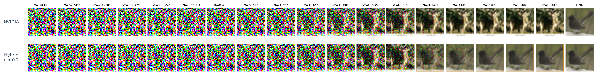

This is the little climax of Part I.
In the discrete case, the denoiser loss itself tells you that pushing the network all the way to the empirical optimum is already dangerous in the terminal regime.
Denoiser training objective
$$\min_\theta\;\E_{\sigma,X,Z}\,\bigl\|m_\sigma^\theta(X+\sigma Z)-X\bigr\|^2$$
Memorization corollary (Prop. 6.13, informal)
If the trained denoiser is asymptotically optimal on training data,
so that $\|m_\sigma^\theta(x)-m_\sigma(x)\|\to 0$ as $\sigma\to 0$,
then the ODE trajectory converges to a training point.

So if the neural network fits the empirical optimum so well, it will only memorize the data. How a neural network can generate novel images, and how to avoid memorization, are still quite open questions.